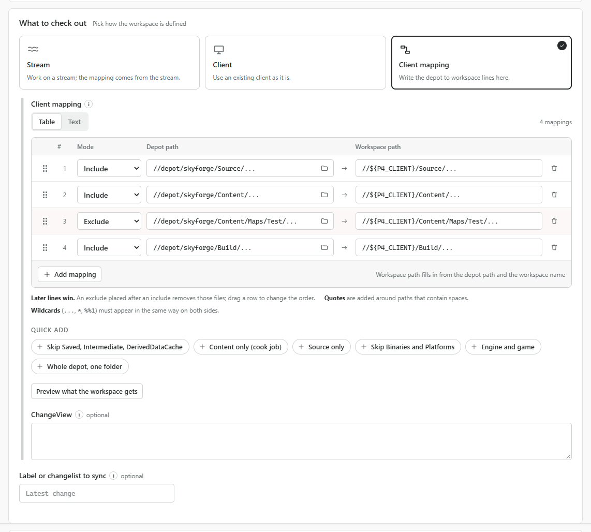

View Mappings
The View Mappings editor says which depot files a Perforce workspace gets and where they go on the agent.
When to use it
You use it whenever a workspace is not a plain stream: the Client mapping card of a Perforce root, and View Mappings in a manual workspace of Perforce Software. A view is a list of lines. Each line maps a depot path to a path in the workspace. Game depots are big, so a good view saves sync time: a cook job only needs Content and Config.
How to set it up
- Open the root or the manual workspace settings and find View Mappings (or Client mapping).
- Click Add mapping, or use Quick add for a ready-made set of lines.
- For each row, choose the Mode, type the Depot path, or click the folder button to browse the depot. The Workspace path fills in from the depot path and the workspace name. You can change it.
- Drag the handle of a row to move it. Later lines win.
- Open Preview what the workspace gets to check the result.
- Click Save on the page.

The table
| Column | What it does |
|---|---|
| Drag handle and line number | Drag to reorder. A later line wins over an earlier one. |
| Mode | Include maps the path. Exclude leaves it out (a - in front of the line). Overlay adds the files on top of earlier lines, in the same place (a + in front). |
| Depot path | Starts with //. It has a folder button to browse the depot and suggests paths as you type. |
| Workspace path | Starts with //<workspace name>/. In a root, write //${P4_CLIENT}/, which stands for the workspace name of each build. Wildcards ..., * and %%1 must match on both sides. Paths with spaces get quotes for you. |
The editor checks each row and says what is wrong, for example a depot path that does not start with //, or a workspace path of another workspace.
Quick add
| Button | What it adds |
|---|---|
| Skip Saved, Intermediate, DerivedDataCache | Exclude rows after your includes, so they win. |
| Content only (cook job) | Only Content and Config come down. |
| Source only | Code and project files, no Content. |
| Skip Binaries and Platforms | Leaves out built output and platforms you do not build. |
| Engine and game | Game, Engine and Shared into the workspace root. |
| Whole depot, one folder | Every folder of the depot, under its own name. |
Type the Game folder in the depot, for example //depot/Skyforge, so the rows use it.
Text view and pasting
The Text view shows the same lines as plain text, one mapping per line: depot path, a space, workspace path. The table and the text stay in step. Lines that start with # are comments and are kept. Lines the table cannot show stay as text until you fix them. Paste from a client spec takes the View: lines of a workspace spec.
Preview
Preview what the workspace gets has two parts.
- Check paths: type a depot path and the editor shows which line decides about it and where the file lands. This runs in Buildspawn, with no call to the server.
- Count from the server: asks the server for the size and number of files of each line, with a sample of files. Use Count again after a change. The server cannot subtract excludes from includes, so the counts of lines are shown side by side.
Streams, Limit View and Change View
- On a stream workspace the view comes from the stream and is shown read only under From the stream, with the share, import and exclude tags.
- Limit View (manual workspaces) restricts the paths of the view. It is a list of single paths. Use exclusion lines starting with
-to leave out paths or file types. It is useful for streams, where the view cannot be edited. - Change View restricts depot paths to a point in time, for example
//depot/path/...@1000. Files that match cannot be submitted.
A worked example
A cook build for Skyforge only needs content. Workspace name skyforge-cook-${NODE_NAME}:
//depot/Skyforge/Content/... //skyforge-cook-${NODE_NAME}/Content/...
//depot/Skyforge/Config/... //skyforge-cook-${NODE_NAME}/Config/...
-//depot/Skyforge/Content/Movies/... //skyforge-cook-${NODE_NAME}/Content/Movies/...The last line leaves out the cinematics folder. Because later lines win, it overrides the first line for that folder.
What you see when it runs
The sync only transfers files the view maps. The log of the sync shows the workspace name with the agent's name filled in.
Problems and fixes
| You see | What to do |
|---|---|
| A row is marked as wrong | Read the message on the row. Usual causes: the depot path does not start with //, or the workspace path does not start with the workspace name. |
| Two agents share one workspace | Put ${NODE_NAME} in the workspace name and in the right side of every line. |
| The file count is bigger than expected | An exclude line must come after the include it removes. Check the order. |